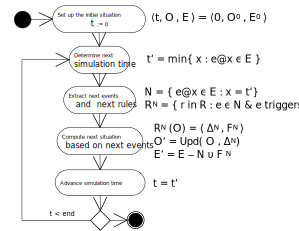

A DDS is characterized by a succession of situations brought about by causal regularities.
Each situation s = ⟨ t, O, E ⟩ consists of a time point t,
a set of objectsO being in a certain state at t and a set of imminent eventsE = {e1@t1, e2@t2,...}, such that ti > t.
A situation has a set of next eventsN ⊆ E occuring at
t' = min { ti : e@ti ∈ E }.
These next events will trigger causal regularities at time t' resulting in a successor situation s'.
Causal Regularities
... determine under which conditions events e@t cause:
state changesΔ of affected objects, and
follow-up eventse1@t1, e2@t2,...
t', Ot, e@t' → Δ, {e1@t1, e2@t2,...} with ti > t'
Modeling a DDS
Computationally, a DDS can be represented by an Object Event Model (OEM) ⟨ OT, ET, R ⟩ consisting of:
object types OT,
event types ET,
event rules R representing causal regularities.
While OT and ET can be defined by corresponding classes in a UML class model, R can be defined by a process model
in the form of an Object Event Graph.
An Example of a Discrete Dynamic Systems
Customers arrive at a service desk at random times.
If there is no other customer in front of them, and the service desk is available,
they are served immediately, otherwise they have to queue up in a waiting line.
The duration of services varies, depending on the individual case.
When a service is completed, the customer departs and the next customer is served, if there is still any customer in the queue.
Objects: customers, the service desk.
Events: arrivals, service starts, service ends.
Event Graphs
... have been proposed for event-based simulation modeling by Schruben in 1983.
The integer variable Q denotes the length of the queue. The Boolean variable B denotes the busy/available status of the service station.
The semantics of an Event Graph is obtained by decomposing it into event rules.
Decomposing EGs into Event Rules (1)
ON Arrival DO Q++ AND if not B, SCHEDULE ServiceStart
e(x1, …)@t is an event expression specifying
(1) the type e of events that trigger the rule,
(2) a parameter t for the occurrence time of triggering events, and possibly
(3) further parameters x1, … corresponding to the event type's attributes
F( t, x1, …) is a function that computes
(1) a set of state changes and
(2) a set of follow-up events, based on the event parameters x1, …
and the event's occurrence time t
Event Rules as Mappings
When a rule r is triggered by an event e, it is applied to the current situation s
by mapping it to a set of state changes Δ and a set of follow-up events F:
re(s) = ⟨ Δ, F ⟩
For a given set of events N and a rule set R, we can form the set of rules triggered by events from N
and apply it as a mapping to s:
RN = { r : r ∈ R & e ∈ N & e triggers r }
Δ = ⋃ { Δi : ri ∈ RN & ri(s) =
⟨ Δi, Fi ⟩ }
F = ⋃ { Fi : ri ∈ RN & ri(s) =
⟨ Δi, Fi ⟩ } RN(s) = ⟨ Δ, F ⟩
Updating a Situation
The current situation s = ⟨ t, O, E ⟩ is updated in the following steps:
computing the next events N
processing N by applying the triggered rules to s resulting in RN(s) = ⟨ Δ, F ⟩
processing the state changes Δ resulting in an updated set of objects O' = Upd( O, Δ)
processing the follow-up events F : E' = E - N ∪ F
... resulting in a successor situation s' = ⟨ t', O', E' ⟩
Executing an OEM as a Transition System

In Search of a Logic
The transition system of the OEM/OES formalism seems to define a kind of
temporal predicate logic with Past and Future operators.
Having a logic for OEM/OES would allow to express Liveness/Safety/Fairness properties of (business process) simulation models.
If Object Event Models could, for instance, be transformed to TLA+,
this would allow to prove Liveness/Safety/Fairness properties.
Can we consider a situation s = ⟨ t, O, E ⟩ as a possible world of a temporal predicate logic frame M?
M = ⟨ T, <, U, Dom, Ind ⟩
Or in which way would the semantics of temporal predicate logic have to be modified?